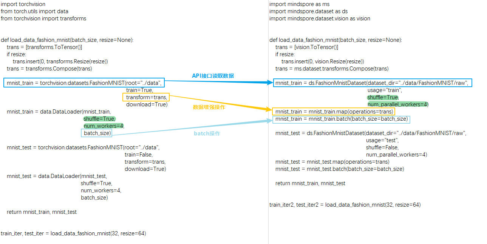
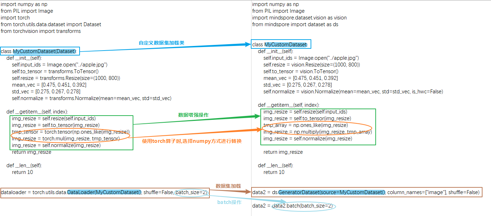

数据处理

本章节主要对网络迁移中数据处理相关的注意事项加以说明，基础的数据处理概念请参考：
数据处理差异对比
MindSpore和PyTorch的数据构建基本流程主要包括两个方面：数据集加载和数据增强。下面从读取常见数据集处理流程、读取自定义数据集处理流程两方面来比较二者的写法差异：
处理常见数据集
MindSpore提供了很多不同领域的常见数据集的加载接口。 除以上业界常用数据集外，MindSpore还开发了MindRecord数据格式以应对高效的读取、超大型数据存储与读取场景，感兴趣可以参阅MindRecord。由于此文章是介绍同类API及写法差异，故选取一个较为经典的数据集API作为迁移对比示例。其他数据集接口差异详细可参考PyTorch与MindSpore API映射表的 torchaudio、torchtext、torchvision 模块。
这里以FashionMnistDataset举例。下图展示了PyTorch的API使用方法（左边部分），以及MindSpore的API使用方法（右边部分）。主要的读取流程为：使用FashionMnist API加载源数据集，再使用transforms对数据内容进行变换，最后根据对数据集进行batch操作。两侧代码对应的关键部分，均使用颜色框进行了标记。

可以看到MindSpore和PyTorch在读取常见数据有以下不同：
获取和读取数据集的方式不同：
PyTorch既可以先将数据集下载到本地然后传给API接口进行读取和解析数据，也可以通过设置API接口的参数
download来下载数据集然后进行读取。MindSpore需要先将数据集下载到本地然后传给API接口进行读取和解析数据。
对数据集本身进行混洗、批处理、并行加载等功能支持的方式不同：
PyTorch支持在
DataLoader中配置参数shuffle、batch、num_workers等来实现相应功能。由于接口API设计的差异，MindSpore则直接在数据集API接口，通过参数
shuffle、num_parallel_workers承载了混洗、并行加载功能，然后在数据增强结束后，使用batch操作将数据集中连续的数据合并为一个批处理数据。batch操作详情请参考batch，由于API设计差异，需要注意MindSpore中batch操作的参数drop_remainder与 PyTorch的DataLoader中的参数drop_last含义一致。
除了FashionMnist API，所有的数据集加载API均有相同的参数设计，上述例子中的
batch操作均适用于所有数据集API。下面以一个可以返回假图像的数据集APIFakeImageDataset再次举例并使用相关的数据操作：import mindspore.dataset as ds dataset = ds.FakeImageDataset(num_images=1000, image_size=(32, 32, 3), num_classes=10, base_seed=0)\ .batch(32, drop_remainder=True) print("When drop_remainder=True, the last batch will be drop, the total batch number is ", dataset.get_dataset_size()) # 1000 // 32 = 31 dataset = ds.FakeImageDataset(num_images=1000, image_size=(32, 32, 3), num_classes=10, base_seed=0)\ .batch(32, drop_remainder=False) print("When drop_remainder=False, the last batch will not be drop, the total batch number is ", dataset.get_dataset_size()) # ceil(1000 / 32) = 32
运行结果：
When drop_remainder=True, the last batch will be drop, the total batch number is 31 When drop_remainder=False, the last batch will not be drop, the total batch number is 32
batch操作也可以使用一些batch内的增强操作，详情可参考YOLOv3。
上面提到的数据集加载API含有相同的参数，在这里介绍一些常用的：
属性
介绍
num_samples(int)
规定数据总的sample数
shuffle(bool)
是否对数据做随机打乱
sampler(Sampler)
数据取样器，可以自定义数据打乱、分配，
sampler设置和num_shards、shard_id互斥num_shards(int)
用于分布式场景，将数据分为多少份，与
shard_id配合使用shard_id(int)
用于分布式场景，取第几份数据(0~n-1，n为设置的
num_shards)，与num_shards配合使用num_parallel_workers(int)
并行配置的线程数
这里还是以
FakeImageDataset举个例子：import mindspore.dataset as ds dataset = ds.FakeImageDataset(num_images=1000, image_size=(32, 32, 3), num_classes=10, base_seed=0) print(dataset.get_dataset_size()) # 1000 dataset = ds.FakeImageDataset(num_images=1000, image_size=(32, 32, 3), num_classes=10, base_seed=0, num_samples=3) print(dataset.get_dataset_size()) # 3 dataset = ds.FakeImageDataset(num_images=1000, image_size=(32, 32, 3), num_classes=10, base_seed=0, num_shards=8, shard_id=0) print(dataset.get_dataset_size()) # 1000 / 8 = 125
运行结果：
1000 3 125
数据增强操作使用的方式不同：
PyTorch MindSpore trans = torchvision.transforms.Resize(...) mnist_train = torchvision.datasets.FashionMNIST(..., transforms=trans, ...)
trans = mindspore.dataset.vision.Resize(...) mnist_train = mindspore.dataset.FashionMnistDataset(...) mnist_train = mnist_train.map(trans, ...)
PyTorch在读取常见数据集时将数据增强操作作为参数传给API接口。
MindSpore通过 map 的方式进行一系列数据增强操作。简单来说
map会从上一个数据节点一条一条获取数据，并对每条数据进行指定的变换操作。传入map操作的数据增强操作可以包含MindSpore预先提供的各类数据增强方法：audio、text、vision、通用。详情请参考数据变换 Transforms。也可以是Python函数，函数里可以自由使用 opencv、PIL、pandas 等一些第三方的库或方法。需要注意的是：
数据集加载和数据增强的过程中，不能使用MindSpore的ops或者nn算子，否则会产生异常。
处理自定义数据集
除了常见的数据集之外，当遇到需要定制加载逻辑的场景，就需要使用自定义数据集API，MindSpore中对应的API为 GeneratorDataset 、PyTorch中对应的API为 DataLoader 。
PyTorch和MindSpore构造自定义 Dataset 对象的基本流程都需要创建一个迭代器类，如下面的 MyCustomDataset ，在该类中定义 __init__ 、 __getitem__ 、 __len__ 三个方法。

可以看到MindSpore和PyTorch在定义和读取自定义数据集有以下不同：
构建和读取自定义数据集类方式不同：
PyTorch自定义一个数据加载类，该类需要继承
torch.utils.data.Dataset，然后传给DataLoader来生成数据迭代对象。MindSpore自定义的数据加载类不需要继承
mindspore.dataset.Dataset，就可以传给自定义数据集接口GeneratorDataset来生成数据迭代对象。需要注意的是，使用自定义数据集GeneratorDataset时需要给每一个输出列设置一个列名，如上面的column_names=["image"]，表示迭代器的第一个输出列叫image。在后续的数据增强以及数据迭代获取阶段，可以通过数据列名字来分别对不同列进行处理。详细可参考与torch.utils.data.DataLoader的差异 。在自定义数据加载类时需要注意以下事项：
在迭代器类中不能使用MindSpore的算子。
迭代器的输出需要是numpy的array。
定义可随机访问数据集时，必须要设置
__len__方法，返回的结果一定要是真实的数据集大小，设置大了在getitem取值时会有越界问题。如数据集大小未确定，可以使用可迭代数据集，详见自定义数据集 。数据增强操作的数据类型不同：
PyTorch的数据增强输入的对象是
Tensor类型。MindSpore的数据增强输入的对象是
numpy类型。
PyTorch MindSpore ... img_resize = torchvision.transforms.Resize(...)(input_ids) img_resize = torchvision.transforms.ToTensor()(img_resize) tmp_tensor = torch.tensor(np.ones_like(img_resize)) img_resize = torch.mul(img_resize, tmp_tensor) img_resize = torchvision.transforms.Normalize(...)(img_resize) ...
... img_resize = mindspore.dataset.vision.Resize(...)(input_ids) img_resize = mindspore.dataset.vision.ToTensor()(img_resize) tmp_array = np.ones_like(img_resize) img_resize = np.multiply(img_resize, tmp_array) img_resize = mindspore.dataset.vision.Normalize(...)(img_resize) ...
当PyTorch使用了
torch算子在数据处理中做了运算，MindSpore不能直接使用对应的ops算子(详细可参考PyTorch与MindSpore API映射表) 对数据做运算，需要将其替换为第三方的库或方法比如 numpy、opencv、PIL、pandas等。一般来说MindSpore的算子在numpy中都能找到对应的方法，如果对应方法的功能不一致，可以向MindSpore社区进行反馈。数据处理格式不同：
PyTorch中
torchvision的数据变换处理Tensor数据默认是CHW格式，处理PIL数据默认是HWC格式。MindSpore的
vision数据变换处理数据默认是HWC格式。详细可参考torchvision和dataset.vision的差异 。
需要留意的是在网络中是否需要将数据格式从
HWC转为CHW，这个要根据网络结构的第一个输入格式是否匹配数据格式进行判断，由于数据处理是按照HWC处理的，得到的结果一般也是HWC，若需要转换，则在数据处理的最后一个map调用 HWC2CHW 方法。
数据迭代差异对比
直接遍历dataset对象
PyTorch的数据对象常见的用法是使用for循环对其进行遍历。
MindSpore也可以对数据对象直接进行遍历。注意这种写法在遍历完一次epoch后不会
shuffle，在训练时这样使用可能会影响精度，训练时需要直接数据迭代时建议使用后续展示的两种方法create_tuple_iterator和create_dict_iterator。
| PyTorch | MindSpore |
|
|
除此之外，MindSpore的数据对象还有以下几种方式迭代获取。
create_tuple_iterator
基于数据集对象创建迭代器，输出数据为 numpy.ndarray 组成的列表。
可以通过参数 columns 指定输出的所有列名及列的顺序。如果columns未指定，列的顺序将保持不变。
import numpy as np
import mindspore.dataset as ds
x = np.random.randint(0, 255, size=(20, 32, 32, 3))
dataset = ds.GeneratorDataset(x, column_names=["data"])
dataset = dataset.batch(10, drop_remainder=True)
iterator = dataset.create_tuple_iterator()
for data_tuple in iterator:
print(data_tuple[0].shape)
运行结果：
(10, 32, 32, 3)
(10, 32, 32, 3)
上面两种在数据读入顺序和网络需要的顺序一致时，可以直接使用：
for data in dataset:
loss = net(*data)
create_dict_iterator
基于数据集对象创建迭代器，输出的数据为字典类型。
import numpy as np
import mindspore.dataset as ds
x = np.random.randint(0, 255, size=(20, 32, 32, 3))
dataset = ds.GeneratorDataset(x, column_names=["data"])
dataset = dataset.batch(10, drop_remainder=True)
iterator = dataset.create_dict_iterator()
for data_dict in iterator:
print(data_dict["data"].shape)
运行结果：
data (10, 32, 32, 3)
data (10, 32, 32, 3)
迁移实战案例
以下是社区中的MindSpore开发者/用户贡献的迁移实战案例，供参考和交流，同时也非常欢迎大家向社区提供更多的案例。